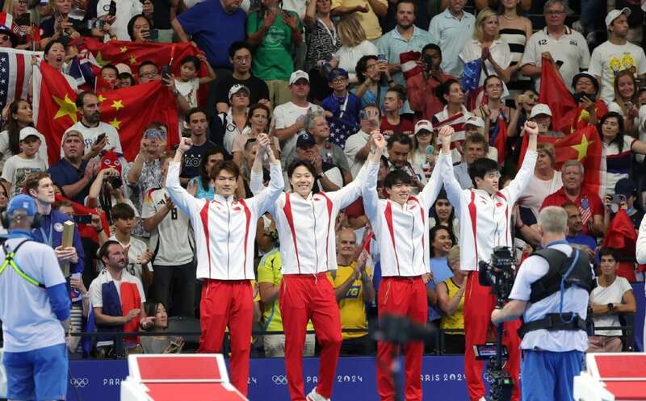
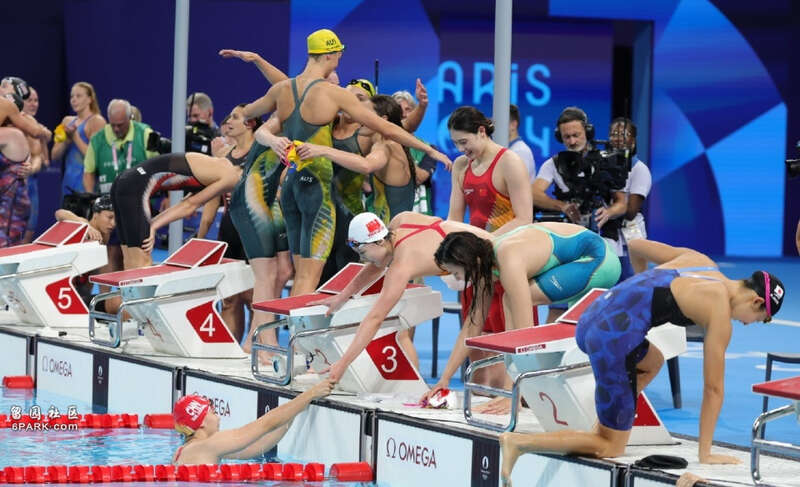
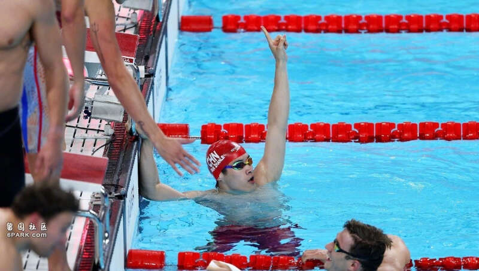
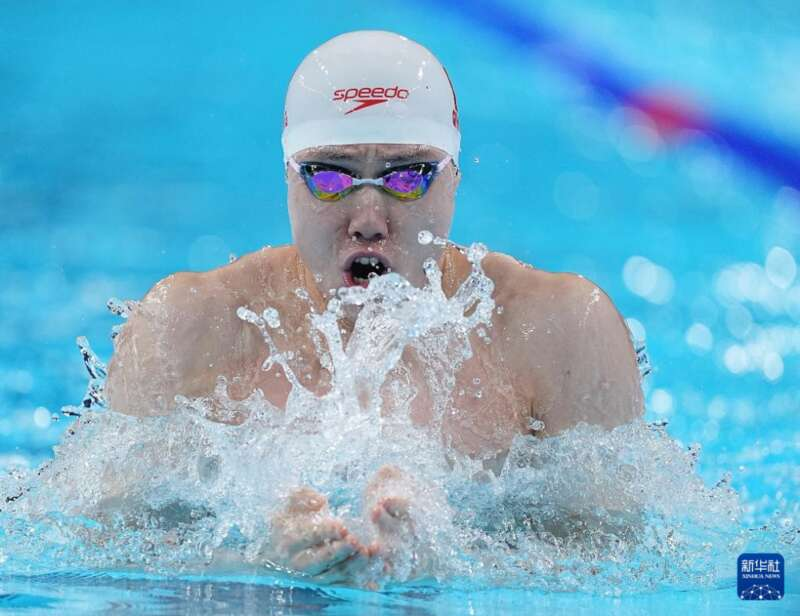
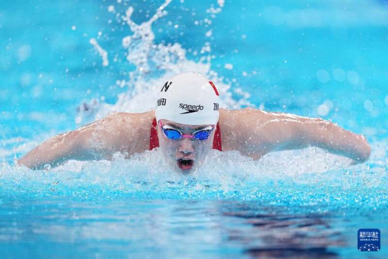
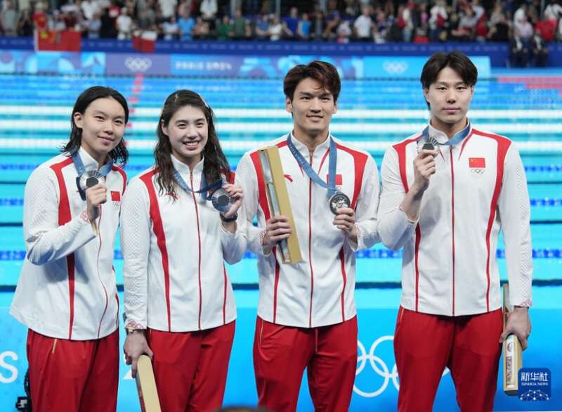
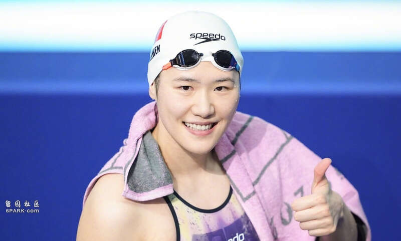

2024年巴黎奥运会，截至北京时间8月5日凌晨，游泳项目全部激战结束。历经9个比赛日的争夺，中国游泳队斩获2金3银7铜，综合战绩非常不错。潘展乐独得2金最为耀眼，张雨霏6枚奖牌最多，徐嘉余奥运金牌圆梦，覃海洋状态大幅提升。

中国游泳队奖牌【2金3银7铜】
金牌：男子100米自由泳【潘展乐】
金牌：男子4×100米混合接力【徐嘉余、覃海洋、孙佳俊、潘展乐、王长浩】
银牌：男子100米仰泳【徐嘉余】
银牌：女子100米蛙泳【唐钱婷】
银牌：男女混合4×100米混合泳接力【徐嘉余、覃海洋、张雨霏、杨浚瑄、潘展乐、唐钱婷】
铜牌：女子4×100米自由泳接力【杨浚瑄、程玉洁、张雨霏、吴卿风、余依婷】
铜牌：女子100米蝶泳【张雨霏】
铜牌：女子200米蝶泳【张雨霏】
铜牌：女子4×200米自由泳【杨浚瑄、李冰洁、葛楚彤、柳雅欣、孔雅琪、汤慕涵】
铜牌：男子200米个人混合泳【汪顺】
铜牌：女子50米自由泳【张雨霏】
铜牌：女子4×100米混合接力【万乐天、唐钱婷、张雨霏、杨浚瑄、汪雪儿、余依婷、吴卿风】

回顾中国游泳队巴黎奥运会征程，虽然拿到2枚金牌，综合战绩非常不错。这9个比赛日当中，只有第4比赛日未能拿到奖牌，其余8天都有奖牌收获。前4个比赛日中国队总是比较遗憾，整体状态看起来始终要差点，使得中国游泳队蒙上一层迷雾。

也许，一切的沉寂就是在等待潘展乐的爆发。终于来到第5个比赛日，游泳项目最受关注的男子100米自由泳决赛到来。枪响！潘展乐一骑绝尘再度打破世界纪录，领先亚军1.08秒的成绩夺得金牌。中国游泳队终于爆发，长舒一口气，金牌终于来了。不仅如此，潘展乐还在最后的接力项目再现超级速度，摘下第2金。

拿到金牌后，中国队整体的氛围好转，选手们变得更自信。尤其是覃海洋状态回升，前4天泳迷们将夺金希望寄托在他身上，可是男子100蛙排名第七、200蛙无缘决赛。好在覃海洋终于游出来，接力项目连续高效发挥，携手队友们斩获1金1银。

多枚奖牌选手
张雨霏：1银5铜
潘展乐：2金1银
徐嘉余：1金2银
覃海洋：1金1银
唐钱婷：2银1铜牌
杨浚瑄：1银3铜
余依婷：2铜
吴卿风：2铜
中国游泳队有多人拿到奖牌，接力项目也包括只参加预赛的选手。张雨霏本届斩获1银5铜，个人奥运奖牌总数达到10枚，成为中国游泳队奥运奖牌最多的选手。此前张雨霏经历诸多波折，带病参赛仍斩获奖牌，直言：“死也要死在泳池里”，真的太拼了。

本届奥运会中国队也有不少遗憾，三枚银牌都差之毫厘，徐嘉余领先的情况下被逆转，好在最后的接力圆梦金牌。唐钱婷的实力没问题，决赛过于紧张，注重心态调节未来可期。男女4×100米混合泳接力更是遗憾，打破原世界纪录却还是亚军。

老将汪顺带着平和的心态出战奥运会，拿到1枚铜牌收官，对于汪顺来说并没有遗憾，但男子200米个人混合泳目前缺少接班人。叶诗文再战奥运会，状态并不是特别出色，也没有取得亮眼的成绩，对于已经28岁的小叶子，或就此与奥运会告别。
Advertisements